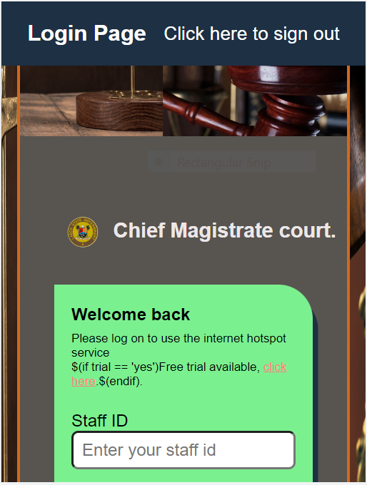

I am a frontend web developer, with expertise in developing designs
into fully functionl websites. With my experience in frontend web
development, my stack covers HTML5, CSS, Javascript, and
Bootstrap5. I also build your website and web application to mobile
responsive. I am always ready and open to work and collaborate with a
team of like mind in the tech space. Always ever ready to learn new
skills and develop myself in order to attain execellence. I have
also received numerous hands-on training as regarding frontend web
development. Currently undergoing Ingressive4Good X Zuri training for
Product design (UI/UX).
Projects
As frontend web deveoper I have successfully carried out the
following projects.

Network admin login/log out pages that enables the
admin to have access to the backend.
Network admin login/log out pages that enables the
admin to have access to the backend.
Network admin login/log out pages that enables the
admin to have access to the backend.
Services
The area of services ranges from web design, web development
of all kind, cooperate website, portfolio, school website and ecommerce
websites. I also implement responsive web development, which makes
your website to be mobile responsive and user friendly on all devices.
Hobies
Football
Long tennis
Voleyball
Listening to cool muisic
Watching football
Reading tech/philosophical/love related books or article
Being on my system(laptop)
Priorities
God
Achieving a set goal
Acquring new skills
Family
True friends
Skills
HTML
CSS
Javascript
Bootstrap5
Product designer (UI/UX)
Wordpress web developer
Intermediate frontend web developer.
Good communication skill in oral and written English